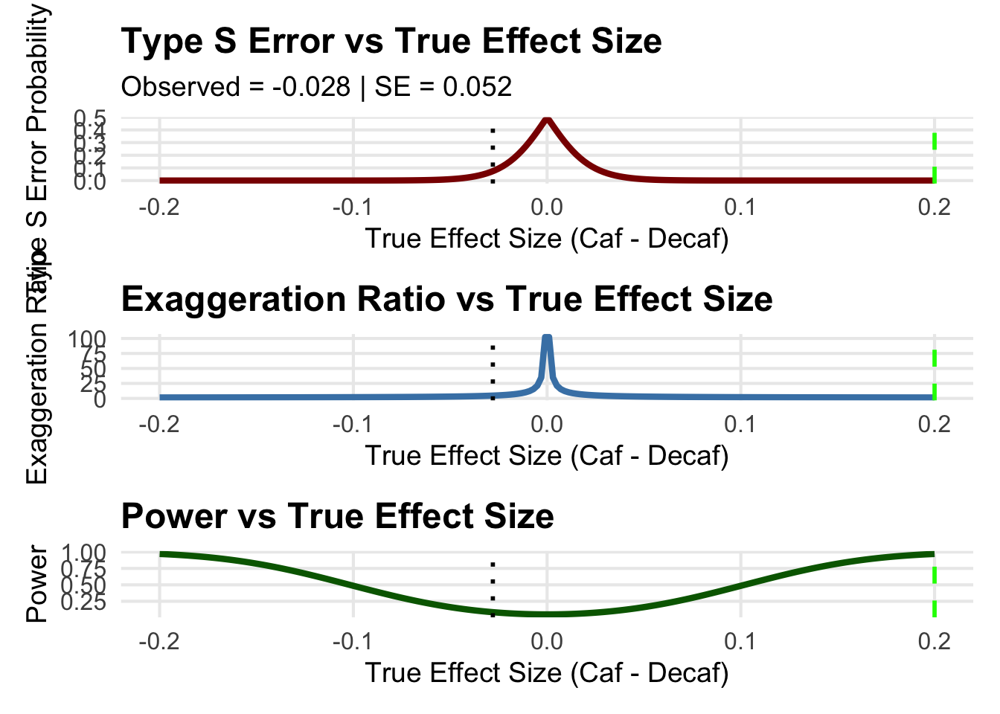

Code
suppressPackageStartupMessages({
library(ggplot2)
library(patchwork)
})
# Define retrodesign closed-form function
retro_design_closed_form <- function(effect, se, alpha = 0.05) {
z_alpha <- qnorm(1 - alpha / 2)
# Power calculation
power <- 1 - pnorm(z_alpha, mean = abs(effect) / se) + pnorm(-z_alpha, mean = abs(effect) / se)
# Type S error probability
type_s <- pnorm(-z_alpha, mean = abs(effect) / se) / power
# Exaggeration ratio (Type M)
exaggeration <- (abs(effect) / se + z_alpha) / (abs(effect) / se)
return(list(power = power, type_s = type_s, type_m = exaggeration))
}
# Posterior-based inputs
observed_effect <- -0.028 # Posterior mean RD
assumed_effect <- 0.20 # Hypothetical clinically meaningful effect
se <- 0.052 # Posterior SD
# Compute retrodesign metrics for observed and assumed effects
power_observed <- retro_design_closed_form(observed_effect, se)$power
power_assumed <- retro_design_closed_form(assumed_effect, se)$power
type_s_observed <- retro_design_closed_form(observed_effect, se)$type_s
type_m_observed <- retro_design_closed_form(observed_effect, se)$type_m
# Print interpretation
cat("Observed Effect:", observed_effect, "
")Observed Effect: -0.028 Code
cat("Power (Observed):", round(power_observed, 3), "
")Power (Observed): 0.084 Code
cat("Type S Error (Observed):", round(type_s_observed, 3), "
")Type S Error (Observed): 0.074 Code
cat("Type M Error (Observed):", round(type_m_observed, 3), "
")Type M Error (Observed): 4.64 Code
# Range of true effects for visualization
true_effects <- seq(-0.20, 0.20, length.out = 200)
retro <- retro_design_closed_form(true_effects, se)
# Build data frame for plotting
df <- data.frame(
TrueEffect = true_effects,
Power = retro$power,
TypeS = retro$type_s,
Exaggeration = retro$type_m
)
# Custom theme
custom_theme <- theme_minimal(base_size = 16) +
theme(plot.title = element_text(face = "bold", size = 18),
plot.subtitle = element_text(size = 14),
axis.title = element_text(size = 14),
axis.text = element_text(size = 12),
panel.grid.minor = element_blank())
# Panel 1: Type S Error
p1 <- ggplot(df, aes(x = TrueEffect, y = TypeS)) +
geom_line(color = "darkred", size = 1.5) +
geom_vline(xintercept = assumed_effect, linetype = "dashed", color = "green", size = 1) +
geom_vline(xintercept = observed_effect, linetype = "dotted", color = "black", size = 1) +
labs(title = "Type S Error vs True Effect Size",
subtitle = paste("Observed =", observed_effect, "| SE =", round(se, 4)),
x = "True Effect Size (Caf - Decaf)",
y = "Type S Error Probability") +
custom_themeWarning: Using `size` aesthetic for lines was deprecated in ggplot2 3.4.0.
ℹ Please use `linewidth` instead.Code
# Panel 2: Exaggeration Ratio
p2 <- ggplot(df, aes(x = TrueEffect, y = Exaggeration)) +
geom_line(color = "steelblue", size = 1.5) +
geom_vline(xintercept = assumed_effect, linetype = "dashed", color = "green", size = 1) +
geom_vline(xintercept = observed_effect, linetype = "dotted", color = "black", size = 1) +
labs(title = "Exaggeration Ratio vs True Effect Size",
x = "True Effect Size (Caf - Decaf)",
y = "Exaggeration Ratio") +
custom_theme
# Panel 3: Power
p3 <- ggplot(df, aes(x = TrueEffect, y = Power)) +
geom_line(color = "darkgreen", size = 1.5) +
geom_vline(xintercept = assumed_effect, linetype = "dashed", color = "green", size = 1) +
geom_vline(xintercept = observed_effect, linetype = "dotted", color = "black", size = 1) +
labs(title = "Power vs True Effect Size",
x = "True Effect Size (Caf - Decaf)",
y = "Power") +
custom_theme
# Combine panels
combined_plot <- p1 / p2 / p3
combined_plot